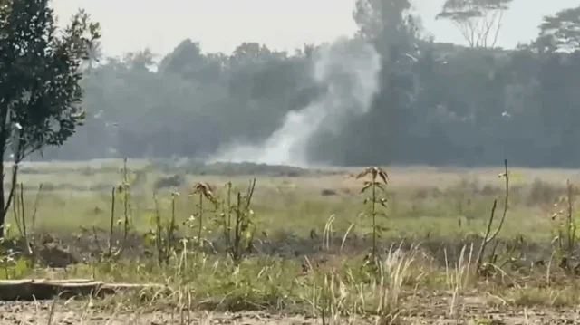

BD Barguna News
সত্যের সন্ধানে, মানুষের পাশে।
অপরাধ
মুন্সীগঞ্জে বিএনপির দুই পক্ষের সংঘর্ষে গুলিবিদ্ধ ৫
📅 প্রকাশিত: ১২ নভেম্বর, ২০২৬ এ ২:৪৫ PM
👁️ পাঠসংখ্যা লোড হচ্ছে...

ছবি - সংগৃহীত
আসন্ন ইউনিয়ন পরিষদ (ইউপি) নির্বাচনকে সামনে রেখে এলাকায় আধিপত্য বিস্তার নিয়ে মুন্সীগঞ্জ সদরের মোল্লাকান্দি ইউনিয়নে বিএনপির দুই পক্ষের মধ্যে রাতভর হামলা, সংঘর্ষ ও ককটেল বিস্ফোরণের ঘটনা ঘটেছে। এতে পাঁচজন গুলিবিদ্ধসহ অন্তত ১০ জন আহত হয়েছেন। সংঘর্ষ চলাকালে পরিস্থিতি নিয়ন্ত্রণ করতে যাওয়া পুলিশের পিকআপ লক্ষ্য করেও ককটেল নিক্ষেপ করা হয়।
বুধবার (১১ নভেম্বর) দিবাগত রাত সাড়ে ১১টা থেকে বৃহস্পতিবার সকাল ৭টা পর্যন্ত মোল্লাকান্দি ইউনিয়নের নোয়াদ্দা, রাজারচর, কংসপুরা ও নতুন আমঘাটা গ্রামে দফায় দফায় এই সংঘর্ষ চলে। ইউনিয়ন বিএনপির সহ-সভাপতি আওলাদ মোল্লা এবং ফ্রান্স প্রবাসী বিএনপি কর্মী রহিম মোল্লার সমর্থকদের মধ্যে এই রক্তক্ষয়ী সংঘর্ষের ঘটনা ঘটে।
সংঘর্ষে গুলিবিদ্ধ পাঁচজন হলেন—দিদার ঢালী (৪৭), বোরহান সিকদার (৪৯), দিদার সরদার (৪৫), রাকিব সরদার (২৫) এবং ইমরান হোসেন (৪৮)। তাঁদের উদ্ধার করে মুন্সীগঞ্জ জেনারেল হাসপাতালে নেওয়া হলে প্রাথমিক চিকিৎসা শেষে উন্নত চিকিৎসার জন্য ঢাকায় পাঠানো হয়েছে। এ ছাড়া সংঘর্ষে আহত বাকি পাঁচজনকে স্থানীয়ভাবে চিকিৎসা দেওয়া হয়েছে।
এ বিষয়ে বক্তব্য জানতে ইউনিয়ন বিএনপির সহ-সভাপতি আওলাদ মোল্লার মুঠোফোন এবং প্রবাসী বিএনপি কর্মী রহিম মোল্লার হোয়াটসঅ্যাপ নম্বরে একাধিকবার যোগাযোগের চেষ্টা করা হলেও তাঁরা সাড়া দেননি।
ঘটনার সত্যতা নিশ্চিত করে মুন্সীগঞ্জ সদর থানার ভারপ্রাপ্ত কর্মকর্তা (ওসি) তছলিম উদ্দিন জানান, ইউনিয়ন নির্বাচনকে কেন্দ্র করে ওই দুটি পক্ষের মধ্যে সংঘর্ষের সূত্রপাত হয়। খবর পেয়ে পুলিশ দ্রুত ঘটনাস্থলে পৌঁছালে উত্তেজিত পক্ষগুলো পুলিশের পিকআপ লক্ষ্য করে বেশ কয়েকটি ককটেল নিক্ষেপ করে। তবে পুলিশ তাৎক্ষণিক তৎপরতা চালিয়ে পরিস্থিতি নিয়ন্ত্রণে আনতে সক্ষম হয়। বর্তমানে ওই এলাকার পরিস্থিতি শান্ত রয়েছে এবং আইনশৃঙ্খলা স্বাভাবিক রাখতে পুলিশি নজরদারি জোরদার করা হয়েছে।
BD Barguna News
বিষয়:
বিএনপিসংঘর্ষমুন্সীগঞ্জ
এ সম্পর্কিত আরও পড়ুন
যশোরে বিএনপি নেতাকে কু’পিয়ে হ’ত্যা
চাঁদপুরে বিএনপির দলীয় কার্যালয়ে অগ্নিসংযোগের অভিযোগ
ব্রাহ্মণবাড়িয়ায় নিকটাত্মীয়দের বিরোধে সংঘর্ষ, আহত ২০
আওয়ামী লীগ নেতাকে থানা থেকে ছাড়ানোর অভিযোগে বিএনপি নেতাকে শোকজ
আওয়ামী লীগ নেতাকে থানা থেকে ছাড়িয়ে বিপাকে বিএনপি নেতা
‘আপা আপা করিস না, তোদের আপা আইবো না’ স্লোগানে জাজিরায় বিএনপির মিছিল
খাগড়াছড়িতে বিএনপি কার্যালয় ও গাড়িতে আগুন
বিএনপির নাম ভাঙিয়ে ময়লা ব্যবসায়ীর কাছে চাঁদা দাবি, বাড়িতে হামলা-লুটপাটের অভিযোগ
পাঠকের মন্তব্য
মোঃ সাইমুন মিয়া
প্রকাশক ও সম্পাদক · BD Barguna News
বরগুনা ও বাংলাদেশের স্থানীয়, জাতীয় এবং গুরুত্বপূর্ণ খবর পাঠকের কাছে তুলে ধরাই আমাদের লক্ষ্য। তথ্যভিত্তিক, স্পষ্ট ও পাঠকবান্ধব সংবাদ প্রকাশে আমরা কাজ করি।
অফিস: শের-ই বাংলা সড়ক, বরগুনা
মোবাইল: ০১৬০৯৩২০৩০৮
ইমেইল: mdsaimoon518@gmail.com